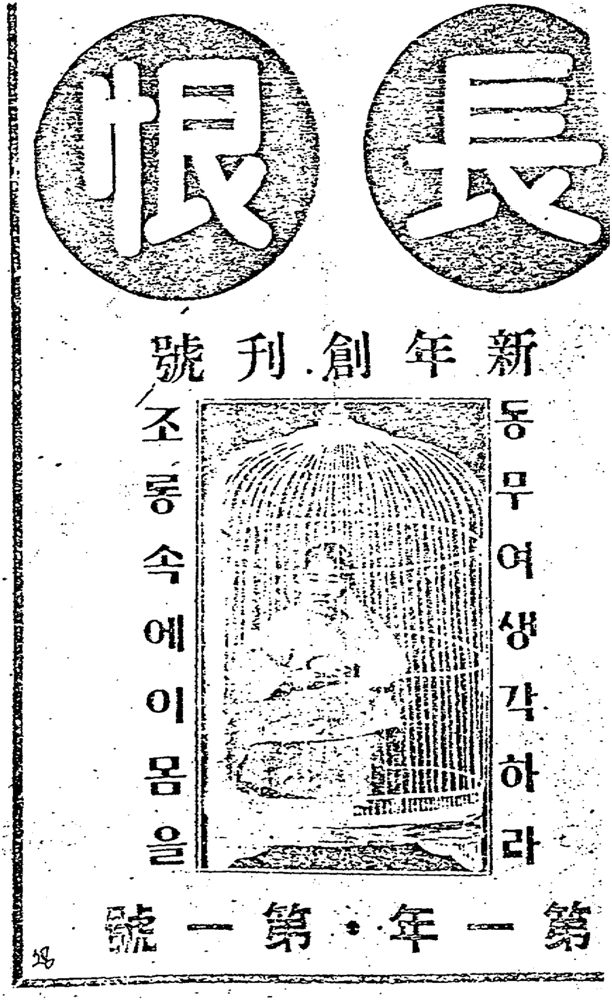
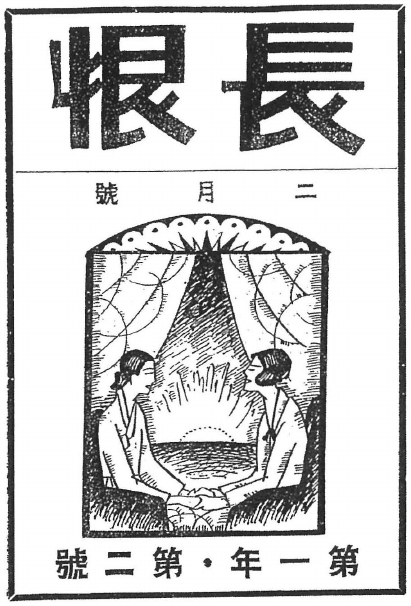

『長恨』 — the magazine the kisaeng made
Two issues appeared in 1927: 창간호 on 10 January and a February number, published by 長恨社 in Kyŏngsŏng. This is the research interface to a digital scholarly edition of both — the evidence itself, item by item.
Reading this edition for the first time? The project page explains what the magazine was, why its contents are contested, and what the reconstruction found.

동무여 생각하라 조롱 속에 이 몸을
1927 original scan

reproduced in the 2009 edition
The two issues
창간호 — January 1927
52 textual items in 48 editorial units. Attested by all four witnesses, including the original 1927 scan. Two-register page layout recovered.
2월호 — February 1927
46 textual items in 41 editorial units. No 1927 scan survives online, so the 2009 edition is the only text witness and page register is unknown throughout.
Editorial architecture
Symposium, round-table, serial fiction, recurring columns, nested poems — how the magazine was actually built.
Four witnesses
The 1927 original, the 2009 edition, the Yonsei catalogue, the published bibliography — and where they disagree.
How to read this edition
Two units are used throughout, and the difference between them is why the witnesses disagree about how many articles the magazine holds. An editorial unit is an item as the magazine itself presents it — one article, one column, or one prompt together with its answers. A textual item is a single continuous text with its own title or byline: each answer to a prompt, and each poem printed inside another article, counts as one.
Every item records which witnesses attest it, what its byline evidences, and how secure that identification is. Where the evidence does not settle something — a reading, a page position, an identity — the interface says so rather than choosing.